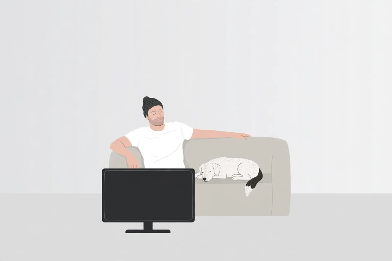

November 27, 2026
Enough Is a Month, Not a Number
Posted in Money
For most of my life, I thought retirement was a number.
Two million dollars. That was the figure everybody threw around, and it seemed to climb every time I turned on the news. For years, I carried it in my head like the answer to everything: hit the number, and you're done. You're safe.
Then I retired, and the big number stopped paying the electric bill by itself.
Now that I'm out of the workforce, "enough" isn't a lump sum sitting in an account. It's a month. If the bills are paid and there's a little money left over at the end of the month, I have enough. The big balance matters because it feeds that monthly number, sure — but it isn't the first thing I look at anymore.
Key takeaways
- Since I retired, "enough" means my bills are paid and there's money left at the end of the month. The big account balance comes second.
- I got here by putting 15% of every paycheck into my 401(k) from about age 25, and living below my means for 40 years.
- My first withdrawal felt like asking my dad for money. Every retiree my age I've talked to felt the same.
- Families ages 55 to 64 with retirement accounts have a median of $239,000 saved. That's what most people actually have, and it doesn't stretch far.
- Start now, at any amount. My spare-change Acorns account hit $30,000 without me lifting a finger.
How I got here
The boring way. I put 15% of every paycheck into my 401(k) every single month, starting when I was 25 or 26. Nobody taught me. Nobody sat me down and explained compounding. I'd just wander into Barnes & Noble, buy books about money, and read them. Every single one said the same thing in different words: live below your means, and pay yourself first.
So I did. While friends were buying Porsches and whatever else was shiny that year — stuff most of them didn't even end up keeping — I just kept putting money away, day after day, for 40 years.
I'm a multimillionaire today because of it. Part of that was hard work. Part was a long, generous stock market. And part was plain luck: being born in a country where a regular guy with a paycheck can actually build something like that.
Here's what nobody tells you about saving for 40 years, though: one day it stops, and the whole machine has to run in reverse.
Asking my dad for my own money
You spend four decades getting a paycheck and pushing money into accounts. Then you retire, the paycheck disappears, and suddenly you have to pull money out to live. That mental flip is way harder than it sounds.
When I left work, my 401(k) moved over to a financial planner, and I had cash on hand. I felt fine. I even told my planner, almost like a promise, that I wouldn't need to touch any of it.
So when the time came to call and ask for my first withdrawal, it felt happy, sad, and mostly awkward. Even though I earned every dime — even though I could pull every dollar out tomorrow and throw it in the street if I wanted to — asking for a distribution felt like walking up and asking my dad for money.
A couple of guys I know who retired around my age said the exact same thing. After 40 years of conditioning yourself not to touch the pile, taking from it feels wrong. Once I set up an automatic monthly distribution, I felt better almost right away. It stopped feeling like a favor and started feeling like a paycheck again.
Twenty-five million dollars can't pay a bill
It only took about two months of retirement for the monthly number to completely take over my thinking.
After leaving work, I moved to Austin and decided to rent out my house in Los Angeles — the Bromley house. Anyone who has ever fixed up a house knows what happened next: everything took longer and cost more. I put fifty or sixty thousand dollars into getting it ready, and it still can't be rented because I'm waiting on the gas company. If you've ever dealt with the gas company in LA, you're already nodding.
So for five straight months, I've been paying for an empty house in Los Angeles while setting up a new place in Austin. The plan was to rent Bromley at a fair price and let that check cover my monthly bills — and once it finally rents, likely between February and April, I can shut my withdrawals off and invest the extra in an ETF or a stock I've been researching.
Until then, the plan is on hold, and it taught me a lesson fast: "I could have $25 million in the bank, but if I have no cash to pay bills, the large number doesn't matter."
The big number lives in retirement accounts and real estate. The bills show up in cash every thirty days. I stopped watching the big balance and started watching the small one in my checking account. That's the number that has to work.
Why bad market days hurt more now
I'd love to tell you that thinking monthly cured me of checking the market. It didn't — in fact, it got worse after I retired.
Some days my retirement account jumps 40 or 50 grand in a single session, which is wild to see. Other days it drops $50,000, and my brain goes straight to 2008. Is this a recession? Is the bubble popping? Am I going to be 70 living with seven roommates?
That's just how human wiring works, at a casino or in a brokerage account: losing stings longer than winning feels good. I know logically that one day, one week, or one month is noise, and that over ten years the market has always come back. My money is spread from very aggressive to very conservative. When I was working, I put 15% or 20% away and looked once a year to rebalance. Now I check more than I should, because when you're retired, you can't go earn a lost million back.
What most people actually have saved
When headlines tell a 25-year-old they need four million dollars to retire, most people tune out because the number sounds like fantasy. And looking at what people actually have, the giant-number obsession makes even less sense.
According to the Federal Reserve's 2025 Survey of Consumer Finances, among families ages 55 to 64 with a retirement account, the average balance is $670,200 — pulled up by a small slice of huge accounts. The median is $239,000, and roughly 37% of families in that age bracket have no retirement account at all.
- Average balance, ages 55 to 64: $670,200 — about $67,020 a year pulling 10%, or $26,808 a year at the standard 4% withdrawal rate
- Median balance, ages 55 to 64: $239,000 — about $23,900 a year pulling 10%, or $9,560 a year at 4%
An average can lie to you. Put one guy with a million dollars next to one guy with a single dollar, and the average says they each have $500,000. That doesn't help the guy with the dollar. The median is the honest picture — and at a standard 4% withdrawal rate, $239,000 is under $10,000 a year.
Social Security won't close that gap on its own, either. The 2026 Trustees report projects the combined trust funds will run dry in 2034, leaving the program able to pay about 83% of scheduled benefits unless Congress steps in.
I watched plenty of friends at my old company skip the 401(k). Next year, they'd say. Next month. They never tracked where the paycheck actually went — five packs of smokes a day, drugs, video games, whatever was right in front of them. Some didn't even contribute enough to get the company match, which isn't an opinion, it's just arithmetic: if your employer matches 4% and you don't put in 4%, you are handing back free money. Every time they got a raise, they simply raised their spending to match — an $80,000 G-Wagon, so they look cool driving past somebody who is never going to think about them again.
By the grace of Buddha, I'm in better shape in retirement than most of the people I went to college with. Honestly, that doesn't feel great — it's just sad, because a lot of them simply refused to listen.
Nobody is watching you
Nobody is paying nearly as much attention to what you own as you think. Everyone you pass on the highway has their own problems to worry about.
Moving to Austin made that obvious. In my gated neighborhood, almost everyone drives trucks, plus one older Mercedes. In Los Angeles, the first question out of people's mouths is what Porsche you drive. A friend of mine actually had a fake 1950s Porsche convertible built for $38,000 — gorgeous gray paint, every badge in the exact right spot — and whenever anyone asked, he told them it was real. For what?
If you sell real estate or work with clients who need to see visible success before trusting you with their money, fine — that's a tool. Otherwise, not performing for strangers is one of the cheapest upgrades you can make. I'd rather drive a paid-off, seven-year-old white Ford F-150 and sleep well knowing I'm okay than sit in a $300,000 car with nothing in the bank. They don't give a shit, in the long run. Being genuinely okay is what puts you in a position to help the people you care about.
What the lump sum is actually for
So do I care about the size of the lump sum at all? Of course I do. Anyone who claims they wouldn't care whether they had $3 million or $4 million is lying — at a 10% return, that extra million is $100,000 a year.
For me, though, the lump sum has two specific jobs. First, it's my safety net if I get sick or end up needing care down the road. Second — and this is the real reason I wake up and invest — it's for my niece and nephew. I don't have kids, and everything I leave behind goes to them. They aren't even blood, and it doesn't matter one bit. I'll set it up so they can't touch it until they're old enough to handle it, because I want to hand them the kind of head start I never had.
The monthly income is how I live. The lump sum is what I leave. They were never competing; they just have different jobs.
What I'd tell anyone — especially if you're behind
Pick whatever scoreboard keeps you motivated — a big net-worth target or a monthly dividend number — because the scoreboard isn't the hard part. Putting money away is.
Your version of downsizing or saving doesn't have to look like mine. I went from a two-story, six-bedroom house to a five-bedroom, and now to a one-story three-bedroom in Austin where two rooms sit empty. No stairs, laundry one step away, and I gave away all my furniture to make the move simple. Someone else wants the big house, and that's fine too.
What isn't optional is starting now — especially if you're five years from retirement with nothing saved. The insurance company doesn't care. The bank doesn't care. The government doesn't care. Like I tell everybody: "Nobody will wipe your ass but you."
Being single, people love asking who is going to take care of me when I get old. Fair question — except marriage isn't a guarantee either. A spouse can pass away, or leave, or run off with somebody twenty times richer. And you can't count on going back to work at 70 either, especially with AI shrinking the jobs that used to be easy fallbacks — except maybe Walmart or Costco needs a greeter, and even then there's no guarantee you can get up every day and do it. You're probably not getting rich on Bitcoin or one lucky stock, either — out of 17,156 NCAA football players eligible for the NFL draft, only 259 got picked, about 1.5%.
If you think you can't afford to save, automate something so small you won't feel it. I have an Acorns account that rounds up spare change and pulls $100 to $125 a month automatically. I haven't touched it, it hasn't changed my day-to-day life at all, and there's $30,000 sitting in it now. Even $50 a month for 20 years — $12,000 out of pocket — grows to roughly $26,000 at a 7% average return. If you can't find $50 in your budget, ask an AI assistant to comb through your expenses and find $50 or $100 you won't miss.
Nobody asked to be born, and saving takes discipline. Nobody hands it to you. Not using the chance this country gives you is how you end up 74 years old on welfare, living on a $1,000 Social Security check. Make the odds as good as you can for yourself.
What a good month looks like now
A good month is simple: I didn't have to dip into savings, and I ended the thirty days with a little more than I spent.

The basics are covered. Lola is fed. I've got clothes, a TV, a couch, and my gym. My truck is paid off, and I've kept it five years after a lifetime of leasing a new one every three. My phone is an iPhone 16 Plus — a couple of models behind — and I couldn't care less. I lift, I walk the dog, I get outside, and once in a while I buy some vintage Polo.
That's enough.
Frequently asked questions
Is it better to plan for retirement around a lump sum or monthly income?
You need both, but once you stop working, monthly income is what you live on. Know your monthly bills and how much reliable money comes in each month. The lump sum is what covers the gap.
How much do people ages 55 to 64 have saved for retirement?
Among families with retirement accounts, the median is $239,000 and the average is $670,200, based on the Federal Reserve's 2025 Survey of Consumer Finances. About 37% of families in that age range have no retirement account at all.
Is it normal to feel guilty taking money out of a 401(k)?
Yes. After decades of saving, the first withdrawal can feel like spending somebody else's money. Setting up a fixed monthly distribution made it feel planned instead of scary for me.
What should I do if I'm five years from retirement with no savings?
Start now with whatever you can, and take your full employer match first. Five years of steady saving is a lot better than zero.
Will Social Security be enough to retire on?
Not for most people. The 2026 Trustees report projects that after 2034 the program can pay about 83% of scheduled benefits unless Congress changes the law.
Sources
- Average Retirement Savings by Age, NerdWallet: Federal Reserve 2025 Survey of Consumer Finances figures for ages 55 to 64, read Nov 27, 2026
- Social Security Trustees 2026 report: combined trust funds projected depleted in 2034, about 83% of scheduled benefits payable after
- The 'magic number' for a comfortable retirement got bigger, USA TODAY, Nov 27, 2026: Northwestern Mutual's 2026 survey puts the retirement "magic number" at $1.46 million — and says few Americans have reached it
Note: I'm not a financial advisor — this is what worked for me, and your numbers will be different. I wrote every word of this one from my own experience; AI helped with the editing. The images in this post are AI-generated illustrations, not photos.
More writing
- November 24, 2026
11 P.M. at Crunch Southpark Meadows
I work out at 11 p.m. seven nights a week. Moving to Austin, every house got measured against one question: how far is the nearest gym that's open at midnight?
- November 22, 2026
Say Nothing, and Mean It
You read the long angry message at 11:52 at night, wrote three replies in your head, and sent none of them.
- November 21, 2026
The Quiet Kind of Strong
The strongest people I know show up, hold it together in public, then sit in the truck for twenty minutes before going inside.
- November 20, 2026
Why I gave up all my furniture — and why I'll never go back
The movers wanted $14,000–$20,000 to move my furniture from LA to Austin. I gave away 95% of it.
- November 18, 2026
Why I started this site
I retired in January and started learning to build on the web with AI. This site is where I practice.